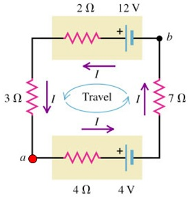
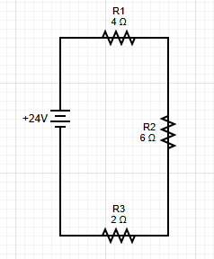

Single-loop circuit analysis is the foundation of circuit theory. These circuits contain one complete path for current flow and can be analyzed using Kirchhoff's Voltage Law (KVL). Understanding single-loop analysis is essential for more complex multi-loop circuits.
What is a Single-Loop Circuit?
Single-Loop Circuit: A circuit that contains exactly one closed path for current flow. All components are connected in series, and the same current flows through every component.
Characteristics of single-loop circuits:
One Current: Same current flows through all components
Series Connection: All components are in series
KVL Analysis: One KVL equation is sufficient
Simple Solution: Direct application of Ohm's Law

Single-loop circuit with batteries and resistors in series.
Systematic Analysis Method
1
Identify the Circuit
Confirm that the circuit has only one loop. All components should be connected in series with no branching.
💡 Tip: Trace the current path to ensure there's only one complete loop.
2
Choose Loop Direction
Pick a direction (clockwise or counterclockwise) to traverse the loop. This direction will be used for sign conventions.
⚡ Direction Rule: Be consistent with your chosen direction throughout the analysis.
3
Write KVL Equation
Apply Kirchhoff's Voltage Law around the loop. Sum all voltage rises and drops, setting the total equal to zero.
$$\sum V = 0$$
For single-loop circuits:
$$\sum V_{sources} - \sum IR = 0$$
⚡ KVL Rule: Voltage rises = Voltage drops around the loop.
4
Solve for Current
Use algebra to solve for the current. Since all components are in series, there's only one current value.
$$I = \frac{\sum V_{sources}}{\sum R}$$
✅ Result: One current value for the entire circuit.
5
Find Voltage Drops
Use Ohm's Law to find the voltage drop across each resistor: V = IR.
$$V_i = I \times R_i$$
✅ Verification: Sum of voltage drops should equal sum of voltage sources.
Worked Example: Basic Single-Loop Circuit
Example: Find current and voltage drops
Problem: A 24V battery is connected to three resistors in series: R₁=4Ω, R₂=6Ω, R₃=2Ω. Find the current and voltage drop across each resistor.

Single-loop circuit with three resistors
Step 1: Identify the Circuit
This is a single-loop circuit with one battery and three resistors in series.
Step 2: Choose Loop Direction
Let's traverse the loop clockwise, starting from the battery.